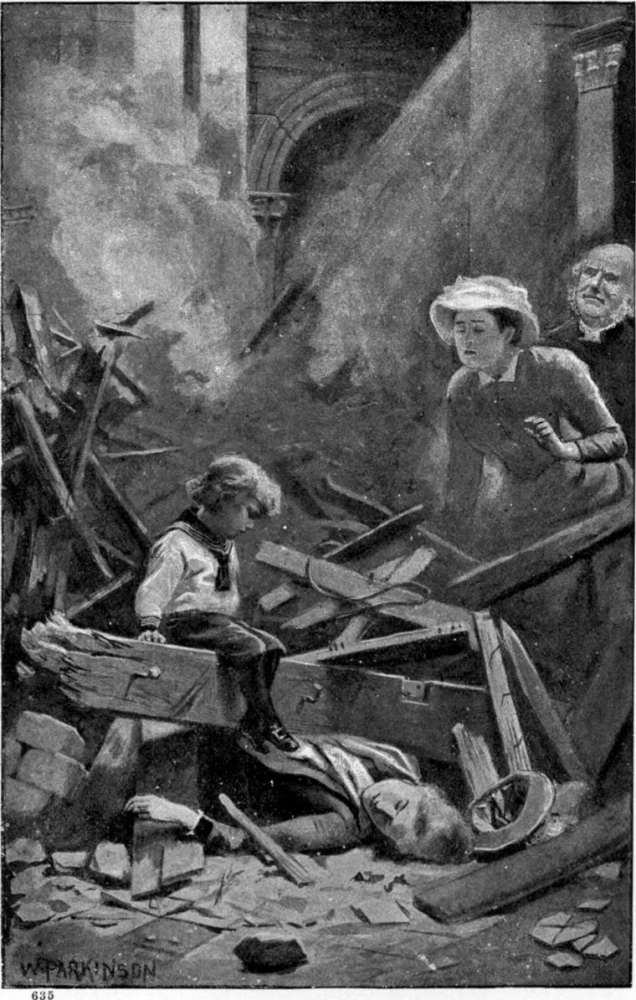

The sun in England seems to shine because he cannot help it; the sun in Italy seems to shine because he means it, and wants to mean it. Thus he shone the next morning, including in his attentions a curious little couple, husband and wife, who, attended by a guide, and borne by animals which might be mules and might be donkeys, and were not lovely to look on except through sympathy with their ugliness, were slowly ascending a steep terraced and zigzagged road, with olive trees above and below them. They were on the south side of the hill, and the olives gave them none of the little shadow they have in their power, for the trees next the sun were always below the road. The man often wiped his red, innocent face, and looked not a little distressed; but the lady, although as stout as he, did not seem to suffer, perhaps because she was sheltered by a very large bonnet. After a silence of a good many minutes, she was the first to speak.
“I can’t say but I’m disappointed in the olives, Thomas,” she remarked. “They ain’t much to keep the sun off you!”
“They wouldn’t look bad along a brookside in Essex!” returned her husband. “Here they do seem a bit out of place!”
“Well, but, poor things! how are they to help it—with only a trayful of earth under their feet! If you planted a priest on a terrace he would soon be as thin as they!”
They had just passed a very stout priest, in a low broad hat, and cassock, and she laughed merrily at her small joke. They were an English country parson and his wife, abroad for the first time in their now middle-aged lives, and happy as children just out of school. Incapable of disliking anybody, there was no unkindness in Mrs. Porson’s laughter.
“I don’t see,” she resumed, “how they ever can have a picnic in such a country!”
“Why not?”
“There’s no place to sit down!”
“Here’s a whole hill-side!”
“But so hard!” she answered. “There’s not an inch of turf or grass in any direction!”
The pair—equally plump, and equally good-natured—laughed together.
I need not give more of their talk. It was better than most talk, yet not worth recording. Their guide, perceiving that they knew no more of Italian than he did of English, had withdrawn to the rear, and stumped along behind them all the way, holding much converse with his donkeys, however, admonishing now this one, now that one, and seeming not a little hurt with their behaviour, to judge from the expostulations that accompanied his occasionally more potent arguments. Assuredly the speed they made was small; but it was a festa, and hot.
They were on the way to a small town some distance from the shore, on the crest of the hill they were now ascending. It would, from the number of its inhabitants, have been in England a village, but there are no villages in the Riviera. However insignificant a place may be, it is none the less a town, possibly a walled town. Somebody had told Mr. and Mrs. Porson they ought to visit Graffiacane, and to Graffiacane they were therefore bound: why they ought to visit it, and what was to be seen there, they took the readiest way to know.
The place was indeed a curious one, high among the hills, and on the top of its own hill, with approaches to it like the trenches of a siege. All the old towns in that region seem to have climbed up to look over the heads of other things. Graffiacane saw over hills and valleys and many another town—each with its church standing highest, the guardian of the flock of houses beneath it; saw over many a water-course, mostly dry, with lovely oleanders growing in the middle of it; saw over multitudinous oliveyards and vineyards; saw over mills with great wheels, and little ribbons of water to drive them—running sometimes along the tops of walls to get at their work; saw over rugged pines, and ugly, verdureless, raw hillsides—away to the sea, lying in the heat like a heavenly vat in which all the tails of all the peacocks God was making, lay steeped in their proper dye. Numerous were the sharp turns the donkeys made in their ascent; and at this corner and that, the sweetest life-giving wind would leap out upon the travellers, as if it had been lying there in wait to surprise them with the heavenliest the old earth, young for all her years, could give them. But they were getting too tired to enjoy anything, and were both indeed not far from asleep on the backs of their humble beasts, when a sudden, more determined yet more cheerful assault of their guide upon his donkeys, roused both them and their riders; and looking sleepily up, with his loud heeoop ringing in their ears, and a sense of the insidious approach of two headaches, they saw before them the little town, its houses gathered close for protection, like a brood of chickens, and the white steeple of the church rising above them, like the neck of the love-valiant hen.
Passing through the narrow arch of the low-browed gateway, hot as was the hour, a sudden cold struck to their bones. For not a ray of light shone into the narrow street. The houses were lofty as those of a city, and parted so little by the width of the street that friends on opposite sides might almost from their windows have shaken hands. Narrow, rough, steep old stone-stairs ran up between and inside the houses, all the doors of which were open to the air—here, however, none of the sweetest. Everywhere was shadow; everywhere, one or another evil odour; everywhere a look of abject and dirty poverty—to an English eye, that is. Everywhere were pretty children, young, slatternly mothers, withered-up grandmothers, the gleam of glowing reds and yellows, and the coolness of subdued greens and fine blues. Such at least was the composite first impression made on Mr. and Mrs. Porson. As it was a festa, more men than usual were looking out of cavern-like doorways or over hand-wrought iron balconies, were leaning their backs against door-posts, and smoking as if too lazy to stop. Many of the women were at prayers in the church. All was orderly, and quieter than usual for a festa. None could have told the reason; the townsfolk were hardly aware that an undefinable oppression was upon them—an oppression that lay also upon their visitors, and the donkeys that had toiled with them up the hills and slow-climbing valleys.
It added to the gloom and consequent humidity of the town that the sides of the streets were connected, at the height of two or perhaps three stories, by thin arches—mere jets of stone from the one house to the other, with but in rare instance the smallest superstructure to keep down the key of the arch. Whatever the intention of them, they might seem to serve it, for the time they had straddled there undisturbed had sufficed for moss and even grass to grow upon those which Mr. Porson now regarded with curious speculation. A bit of an architect, and foiled, he summoned at last what Italian he could, supplemented it with Latin and a terminational o or a tacked to any French or English word that offered help, and succeeded, as he believed, in gathering from a by-stander, that the arches were there because of the earthquakes.
He had not language enough of any sort to pursue the matter, else he would have asked his informant how the arch they were looking at could be of any service, seeing it had no weight on the top, and but a slight endlong pressure must burst it up. Turning away to tell his wife what he had learned, he was checked by a low rumbling, like distant thunder, which he took for the firing of festa guns, having discovered that Italians were fond of all kinds of noises. The next instant they felt the ground under their feet move up and down and from side to side with confused motion. A sudden great cry arose. One moment and down every stair, out of every door, like animals from their holes, came men, women, and children, with a rush. The earthquake was upon them.
But in such narrow streets, the danger could hardly be less than inside the houses, some of which, the older especially, were ill constructed—mostly with boulder-stones that had neither angles nor edges, hence little grasp on each other beyond what the friction of their weight, and the adhesion of their poor old friable cement, gave them; for the Italians, with a genius for building, are careless of certain constructive essentials. After about twenty seconds of shaking, the lonely pair began to hear, through the noise of the cries of the people, some such houses as these rumbling to the earth.
They were far more bewildered than frightened. They were both of good nerve, and did not know the degree of danger they were in, while the strangeness of the thing contributed to an excitement that helped their courage. I cannot say how they might have behaved in an hotel full of their countrymen and countrywomen, running and shrieking, and altogether comporting themselves as if they knew there was no God. The fear on all sides might there have infected them; but the terror of the inhabitants who knew better than they what the thing meant, did not much shake them. For one moment many of the people stood in the street motionless, pale, and staring; the next they all began to run, some for the gateway, but the greater part up the street, staggering as they ran. The movement of the ground was indeed small—not more, perhaps, than half an inch in any direction—but fear and imagination weakened all their limbs. They had not run far, however, before the terrible unrest ceased as suddenly as it had begun.
The English pair drew a long breath where they stood—for they had not stirred a step, or indeed thought whither to run—and imagining it over for a hundred years, looked around them. Their guide had disappeared. The two donkeys stood perfectly still with their heads hanging down. They seemed in deep dejection, and incapable of movement. A few men only were yet to be seen. They were running up the street. In a moment more it would be empty. They were the last of those that had let the women go to church without them. They were hurrying to join them in the sanctuary, the one safe place: the rest of the town might be shaken in heaps on its foundations, but the church would stand! Guessing their goal, the Porsons followed them. But they were neither of a build nor in a condition to make haste, and the road was uphill. No one place, however, was far from another within the toy-town, and they came presently to an open piazza, on the upper side of which rose the great church. It had a square front, masking with its squareness the triangular gable of the building. Upon this screen, in the brightest of colours, magenta and sky-blue predominating, was represented the day of judgment—the mother seated on the right hand of the judge, and casting a pitiful look upon the miserable assembly on her left. The square was a good deal on the slope, and as they went slowly up to the church, they kept looking at the picture. The last tatters of the skirt of the crowd had disappeared through the great door, and but for themselves the square was empty. All at once the picture at which they were gazing, the spread of wall on which it was painted, the whole bulk of the huge building began to shudder, and went on shuddering—“just,” Mr. Porson used to say when describing the thing to a friend, “like the skin of a horse determined to get rid of a gad-fly.” The same moment the tiles on the roof began to clatter like so many castanets in the hands of giants, and the ground to wriggle and heave. But they were too much absorbed in what was before their eyes to heed much what went on under their feet. The oscillatory displacement of the front of the church did not at most seem to cover more than a hand-breadth, but it was enough. Down came the plaster surface, with the judge and his mother, clashing on the pavement below, while the good and the bad yet stood trembling. A few of the people came running out, thinking the open square after all safer than the church, but there was no rush to the open air. The shaking had lasted about twenty seconds, or at most half a minute, when, without indication to the eyes watching the front, there came a roaring crash and a huge rumbling, through and far above which, rose a multitudinous shriek of terror, dismay, and agony, and a number of men and women issued as if shot from a catapult. Then a few came straggling out, and then—no more. The roof had fallen upon the rest.
With the first rush from the church, the shaking ceased utterly, and the still earth seemed again the immovable thing the English spectators had conceived her. Of what had taken place there was little sign on the earth, no sign in the blue sun-glorious heaven; only in the air there was a cloud of dust so thick as to look almost solid, and from the cloud, as it seemed, came a ghastly cry, mingled of shrieks and groans and articulate appeals for help. The cry kept on issuing, while the calm front of the church, dominated by that frightful canopy, went on displaying the assembled nations delivered from their awful judge. While the multitude groaned within, it spread itself out to the sun in silent composure, welcoming and cherishing his rays in what was left of its gorgeous hues.
The Porsons stood for a moment stunned, came to their senses, and made haste to enter the building. With white faces and trembling hands, they drew aside the heavy leather curtain that hung within the great door, but could for a moment see nothing; the air inside seemed filled with a solid yellow dust. As their eyes recovered from the sudden change of sunlight for gloom, however, they began to distinguish the larger outlines, and perceived that the floor was one confused heap of rafters and bricks and tiles and stones and lime. The centre of the roof had been a great dome; now there was nothing between their eyes and the clear heaven but the slowly vanishing cloud of ruin. In the mound below they could at first distinguish nothing human—could not have told, in the dim chaos, limbs from broken rafters. Eager to help, they dared not set their feet upon the mass—not that they feared the walls which another shock might bring upon their heads, but that they shuddered lest their own added weight should crush some live human creature they could not descry. Three or four who had received little or no hurt, were moving about the edges of the heap, vaguely trying to lift now this, now that, but yielding each attempt in despair, either from its evident uselessness, or for lack of energy. They would give a pull at a beam that lay across some writhing figure, find it immovable, and turn with a groan to some farther cry. How or where were they to help? Others began to come in with white faces and terror-stricken eyes; and before long the sepulchral ruin had little groups all over it, endeavouring in shiftless fashion to bring rescue to the prisoned souls.
The Porsons saw nothing they could do. Great beams and rafters which it was beyond their power to move an inch, lay crossed in all directions; and they could hold little communication with those who were in a fashion at work. Alas, they were little better than vainly busy, while the louder moans accompanying their attempts revealed that they added to the tortures of those they sought to deliver! The two saw more plainly now, and could distinguish contorted limbs, and here and there a countenance. The silence, more and more seldom broken, was growing itself terrible. Had they known how many were buried there, they would have wondered so few were left able to cry out. At moments there was absolute stillness in the dreadful place. The heart of Mrs. Porson began to sink.
“Do come out,” she whispered, afraid of her own voice. “I feel so sick and faint, I fear I shall drop.”
As she spoke something touched her leg. She gave a cry and started aside. It was a hand, but of the body to which it belonged nothing could be seen. It must have been its last movement; now it stuck there motionless. Then they spied amid sad sights a sadder still. Upon the heap, a little way from its edge, sat a child of about three, dressed like a sailor, gazing down at something—they could not see what. Going a little nearer, they saw it—the face of a fair woman, evidently English, who lay dead, with a great beam across her heart. The child showed no trace of tears; his white face seemed frozen. The stillness upon it was not despair, but suggested a world in which hope had never yet been born. Pity drove Mrs. Porson’s sickness away.
“My dear!” she said; but the child took no heed. Her voice, however, seemed to wake something in him. He started to his feet, and rushing at the beam, began to tug at it with his tiny hands. Mrs. Porson burst into tears.
“It’s no use, darling!” she cried.
“Wake mamma!” he said, turning, and looking up at her.
“She will not wake,” sobbed Mrs. Porson.
Her husband stood by speechless, choking back the tears of which, being an Englishman, he was ashamed.
“She will wake,” returned the boy. “She always wakes when I kiss her.”

He knelt beside her, to prove upon her white face the efficacy of the measure he had never until now known to fail. That he had already tried it was plain, for he had kissed away much of the dust, though none of the death. When once more he found that she did not even close her lips to return his passionate salute, he desisted. With that saddest of things, a child’s sigh, and a look that seemed to Mrs. Porson to embody the riddle of humanity, he reseated himself on the beam, with his little feet on his mother’s bosom, where so often she had made them warm. He did not weep; he did not fix his eyes on his mother; his look was level and moveless and set upon nothing. He seemed to have before him an utter blank—as if the outer wall of creation had risen frowning in front, and he knew there was nothing behind it but chaos.
“Where is your papa?” asked Mr. Porson.
The boy looked round bewildered.
“Gone,” he answered; nor could they get anything more from him.
“Was your papa with you here?” asked Mrs. Porson.
He answered only with the word Gone, uttered in a dazed fashion.
By this time all the men left in the town were doing their best, under the direction of an intelligent man, the priest of a neighbouring parish. They had already got one or two out alive, and their own priest dead. They worked well, their terror of the lurking earthquake forgotten in their eagerness to rescue. From their ignorance of the language, however, Mr. Porson saw they could be of little use; and in dread of doing more harm than good, he judged it better to go.
They stood one moment and looked at each other in silence. The child had dropped from the beam, and lay fast asleep across his mother’s bosom, with his head on a lump of mortar. Without a word spoken, Mrs. Porson, picking her way carefully to the spot, knelt down by the dead mother, tenderly kissed her cheek, lifted the sleeping child, and with all the awe, and nearly all the tremulous joy of first motherhood, bore him to her husband. The throes of the earthquake had slain the parents, and given the child into their arms. Without look of consultation, mark of difference, or sign of agreement, they turned in silence and left the terrible church, with the clear summer sky looking in upon its dead.
As they passed the door, the sun met them, shining with all his might. The sea, far away across the tops of hills and the clefts of valleys, lay basking in his glory. The hot air quivered all over the wide landscape. From the flight of steps in front of the church they looked down on the streets of the town, and beyond them into space. It looked the best of all possible worlds—as neither plague, famine, pestilence, earthquakes, nor human wrongs, persuade me it is not, judged by the high intent of its existence. When a man knows that intent, as I dare to think I do, then let him say, and not till then, whether it be a good world or not. That in the midst of the splendour of the sunny day, in the midst of olives and oranges, grapes and figs, ripening swiftly by the fervour of the circumambient air, should lie that charnel-church, is a terrible fact, neither to be ignored, nor to be explained by the paltry theory of the greatest good to the greatest number; but the end of the maker’s dream is not this.
When they turned into the street that led to the gate, they found the donkeys standing where they had left them. Their owner was not with them. He had gone into the church with the rest, and was killed. When they caught sight of the patient, dejected animals, unheeded and unheeding, then first they spoke, whispering in the awful stillness of the world: they must take the creatures, and make the best of their way back without a guide! They judged that, as the road was chiefly down hill, and the donkeys would be going home, they would not have much difficulty with them. At the worst, short and stout as they were, they were not bad walkers, and felt more than equal to carrying the child between them. Not a person was in the street when they mounted; almost all were in the church, at its strange, terrible service. Mrs. Porson mounted the strongest of the animals, her husband placed the sleeping child in her arms, and they started, he on foot by the side of his wife, and his donkey following. No one saw them pass through the gate of the town.
They were not sure of the way, for they had been partly asleep as they came, but so long as they went downward, and did not leave the road, they could hardly go wrong! The child slept all the way.